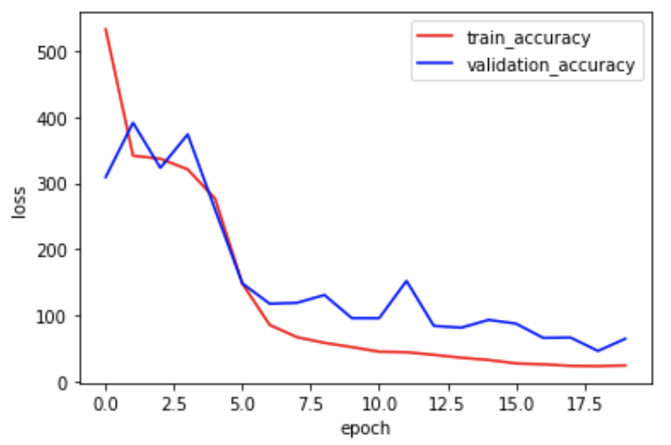

We use the same dataset as the one for last part. However, now we go one step further and we are trying to predict all 58 keypoints using CNN model!
Now we resize images in datasets to size 240*180 instead of 80*60 to capture more information. One another important improvement is augmentation on both training data and validation data. Because we have relatively small dataset (only 240 images), we try to increase our dataset size by having rotation, shift, brightness change, contrast change or hue change on original images to create new images. Here I implemented random shift with offset<=30 pixels in both x and y directions and random rotation of <=20 degrees in any direction around the center. Pay attention that the ground truth point should also be transformed! Here I increase the dataset size by 10 times.
The new CNN model has input size 240*180, output size 116 (coordinates of 58 key points), and there are more layers in the middle: conv2 with kernal size 3*3, RELU, maxPool with window 2*2.
We can visualize the convolution kernels.
Then I train the model on training data using 20 epoches. During the training process, we can see the MSE loss of the model on training dataset and validation dataset are decreasing, which means our model is gradually improved with more training epoches.
After the training process, I apply the model onto training data and validation data again. Following are some examples showing how well the simple model does on predicting the key points. Blue points indicate the ground truth key points, and red points indicate the points predicted by my model.
Same as before, the model predicts well on those images which are taken fight in front of the person's face. Although the prediction may not be as accurate as predicting a single nose tip point, the error is reasonable.
These three predictions, however, are not as good as the examples above. We can see the points on jaw are off a little bit far. Same as before, it might be caused by the unpreviliged photo angle.
created with
Website Builder Software .